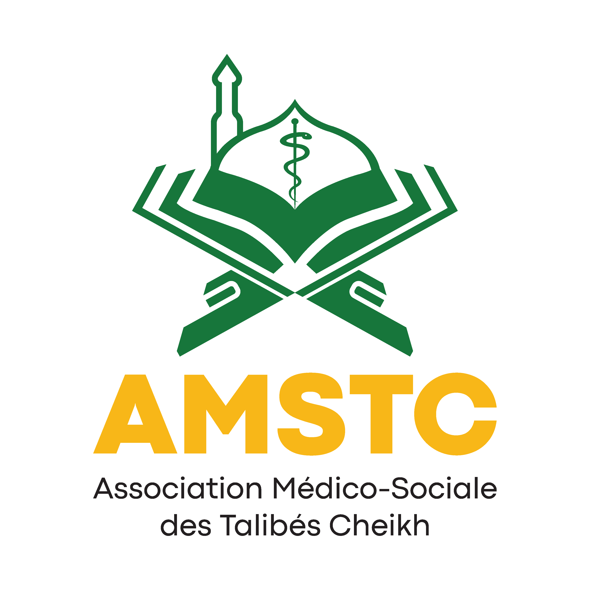

01
15 janvier 2026
Gamou Louga 2026
Contenu à venir.

Rapport annuel
7 réalisations - Association Médico-Sociale des Talibés Cheikh
Contenu à venir.
Contenu à venir.
Édition annulée. Devait se tenir le samedi 21 février 2026 à la FMPO : Enseignement Post Universitaire (15h-19h) puis Ndogou sociale (19h-20h), avec une collecte de fonds (Barkelou).
Contenu à venir.

Match de football Pharmaciens & Paramédicaux contre Médecins & Dentistes, samedi 06 juin 2026.

"L'AMSTC lance amstc.org : un site public pour découvrir l'association et un espace membres complet pour ses adhérents. Tour d'horizon de ce qu'on y trouve."

La gestion de nos campagnes de consultations gratuites entre dans l'ère numérique